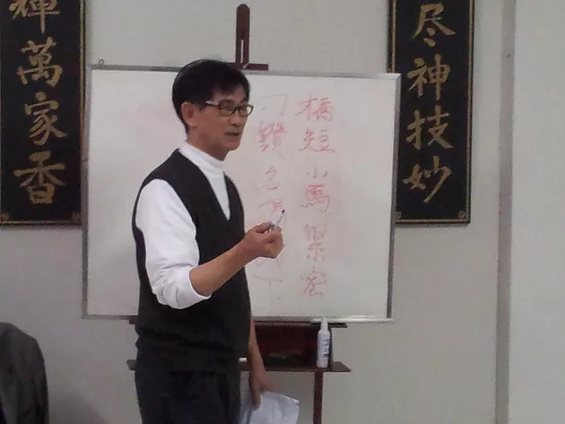

Entrevista com Mestre Lo
Entrevista publicada no Boletim Informativo da Academia Pinheiros de Wing Chun edição 5, realizada por Thomas Pinheiro em 2010
Mestre Lo, Você poderia contar sobre seu início de treino no Wing Chun e como era a rotina de treino com o Mestre Greco Wong?
Thomas Lo: Comecei em 1965, quando iniciei a faculdade em Hong Kong, Greco Wong era aluno do departamento de administração de empresas, eu era calouro e ele era muito amigável com todos, outras pessoas gostavam de brincar com ele (tentar encostar a mão nele), sabendo que ele era muito bom em kung fu. Tinha carisma na faculdade. Sabendo que ele treinava kung fu aproximei-me dele e descobri que ele era um perito em Wing Chun Kuen. Pedi se poderia me ensinar, no começo ele não me levou muito a sério mas depois realmente me aceitou como discípulo. Logo depois mais duas ou três pessoas de outro departamento também pediram para treinar. Praticávamos numa pequena sala do grêmio de nosso curso na faculdade, era todo o dia, mais ou menos três horas, as vezes mais. Não tinha horário certo pois as vezes num espaço de horário de aula, também praticávamos. Discutiamos sobre treino, com outras pessoas de outros departamentos que treinavam wing chun ou outros estilos. Greco Wong tinha experiências anteriores nos estilos de Tai Chi Chuan e Pak Hok, então explicava sobre outros estilos e como Wing Chun utilizaria defesas e contra ataques.
Porque resolveu praticar Wing Chun ao invés de investir em estilos de Kung Fu que já praticava?
Thomas Lo: Não havia praticado seriamente outros estilos, apenas aprendia golpes com intuito de combate em rua, apesar da disciplina em casa, pois meu pai era militar, e não recomendava que eu treinasse kung fu, pois ele não queria que eu estivesse metido em encrencas. Além disso era difícil encontrar bons professores, já naquela época. Cada estilo possui um sistema, e cada estilo possui sua própria arte. Me interessou o Wing Chun devido ao estudo da economia de movimentos, a eficácia técnica, saúde e disciplina.
De alguma forma, seu aprendizado de kung fu anterior e ou posterior ao de Wing Chun, pôde influenciar as técnicas que você aprendeu com mestre Greco Wong?
Thomas Lo: Quando eu treinava com Greco Wong, Primeiro: ele pedia para que esquecesse o que já havia treinado, para que não pegasse vícios de outro treino. Segundo: aproveitava o que já tinha de conhecimento para estudo de aplicação de Wing Chun. Saber a característica de outro estilo, mas o mais importante, é se concentrar em uma coisa, ficar perfeito é o que resolve, aprender muita coisa e não funcionar, então para que aprender? Para aprender uma coisa é preciso humildade, fibra. Melhor ter qualidade do que quantidade. Ter um mestre de verdade para orientar corretamente é fundamental.
Normalmente, ao iniciarmos uma longa caminhada, nos orientamos por alguém que já tenha percorrido o caminho antes de nós. Quem você, Mestre Lo, teve como referência nas artes marciais, quando estava para dar os primeiros passos? Se teve alguém, poderia dizer hoje que alcançou o seu objetivo maior? Ficou algo por fazer?
Thomas Lo: Eu não tenho, em minha época não tínhamos mídia para criar inspirações, aprendia mais era pela necessidade, mais para mostrar, querer vencer com o próprio conhecimento, com técnica. Aquela época além de defesa pessoal e saúde, treinava para ocupar o tempo. Não tinha tanta coisa ou distrações a fazer, era apenas uma atividade a mais. Vivenciar a relação de respeito com o mestre, como uma relação com o próprio pai. Antigamente, em gerações como a do grande Mestre Yip Man, os pais é que levavam o filho para ter aulas com o mestre. Confiavam no mestre. Ainda assim para treinar ficaria-se de joelhos ao pé do mestre. Nunca tive o pensamento de chegar a um determinado ponto de aprendizado. Eu e meus colegas da época apenas resolvemos acompanhar, conviver com o mestre, era algo de satisfação pessoal, acrescidos de característica pessoal e mental para a escolha.
O que o levou a vir ao Brasil, Mestre Lo?
Thomas Lo: Depois de formado, sem experiência de vida prática, profissional, e querendo sair de Hong Kong, tentei bolsas de estudo nos E.U.A. e Canadá, porém demoraria mais um ano para que eu pudesse obter vagas, então aproveitei a ociosidade, tinha um padrinho que estava em Hong Kong e era estabelecido no Brasil na cidade de Amparo. Acabei decidindo viajar então para conhecer o Brasil. Fiz uma viagem de navio, forma mais ou menos 50 dias, parando em vários portos. Mesmo sem falar nada de português, e com uma mala, uma mochila, um violão e algumas ferramentas, acabei por me estabelecer no Brasil.
Como eram as aulas de Kung Fu em academia na China em comparação com as aulas no Brasil?
Thomas Lo: Em Hong Kong, não tinha muita gente, era sem horário, a academia ficava aberta o tempo todo, quando o mestre não estava, sempre tinha um aluno graduado. Geralmente tem dois tipos de academia, a comercial, que ensina o que você paga e pede. O outro tipo, a que considera família, disciplina rígida, o discípulo é que resolve os problemas do mestre. Aluno é diferente de discípulo. Aluno é o que paga apenas, discípulo é o afilhado. As academias no Brasil são mais organizadas em relação a padronização, os ensinos e métodos.
No Brasil, o que mais procurou desenvolver nas suas aulas de Wing Chun?
Thomas Lo: Não vivo com aula, aprendi para mim, não tinha idéia de dar aula algum dia. Porém quando resolvi ensinar, francamente nunca tive retorno financeiro, técnicamente sempre busquei ensinar sensibilidade, flexibilidade, potência de trabalho de energia interna.
Quais as diferenças de teoria das três etapas de treino do Wing Chun (siu lim tau, chum kiu, bue tze) e poderia falar um pouco de como elas podem se complementar?
Thomas Lo: Siu Lim Tau: Significa pequena ideia, pouca ideia, ideia de início, puramente desenvolver técnica com teoria básica, desenvolver movimento natural que tenha perdido no dia a dia. Exemplo: postura do ombro, coluna, combinando com os movimentos naturais do ser humano. Chum Kiu: significa procurar a ponte do oponente, ponte ( transmissão da força do oponente) procura, sente, aproveita para transmitir contra ele. Necessita o básico e mais sensibilidade, potência, flexibilidade. Bue Tze: significa dedos que voam, para o oponente, são ataques para salvar a vida. A correlação entre eles é como matemática ou lingüística, etc... Depende do básico para se desenvolver cálculos lógicamente, ou orações com concordância verbal, etc...
Qual a importância da prática do chi sau?
Thomas Lo: A importância está em desenvolver a sensibilidade, flexibilidade, concentração para defesa e ataque.
Qual a contribuição da prática do Wing Chun para o físico do praticante?
Thomas Lo: Baseado no movimento natural, a postura praticada no Wing Chun além de desenvolver fisicamente, está ligada também a prática interna, o “chi”, para saúde, conservação e aumento de energia. Relaxamento significa aliviar a tensão, a ansiedade. Na postura certa aumenta o controle emocional, o foco, você aprende a mandar no seu próprio corpo. Em postura correta, a circulação do sangue é correta. Acarreta benefício geral aos órgãos e se regula quando tiver problema de saúde crônica, sobre orientação de alguns casos.
Algum motivo para a forma ou as técnicas do Bue Tze atualmente ainda serem de ensino fechado, mesmo com toda a mídia sobre o assunto existentes?
Thomas Lo: Antigamente se considerava um segredo de família, não saíam da família as técnicas, possuía também outro nome o bue tze, que traduzindo, era golpe de salvar a vida. Tudo bem, hoje em dia você vê nos videos, nos livros, mas se a pessoa não treina, não tem valor algum os movimentos, porque para funcionarem necessita a pessoa ter conhecimento anterior, embasamento técnico, precisa ter nível técnico para aprender bue tze. É necessário ter controle corporal, emocional também, se não, se machuca ou machuca os outros sem responsabilidade alguma.
Se atualmente você fosse um leigo em artes marciais e estivesse procurando alguém com quem treinar, como você, Mestre Lo, se orientaria para obter sucesso em sua escolha?
Thomas Lo:Escolher o que e com quem treinar é como um casamento, você escolhe e é escolhido. E não tem tempo certo, pode durar para sempre, pode ter um tempo certo. Ninguém define. Por exemplo: você idealiza a mulher perfeita, mas não é para você, ou não é a que você casa. Serve para você ou não serve para você. Outro exemplo: é como comprar um sapato, você encontra o modelo, a cor, gosta, acha muito bonito, mas não tem seu número. Encontrar estilo ou mestre para aprender é natural, leve em conta a pessoa, lugar , horário, dia que é certo para encaixar. Não pode ser algo forçado. Mas vale indicação, recomendação de alguém, quem leva a sério não é muito popular.